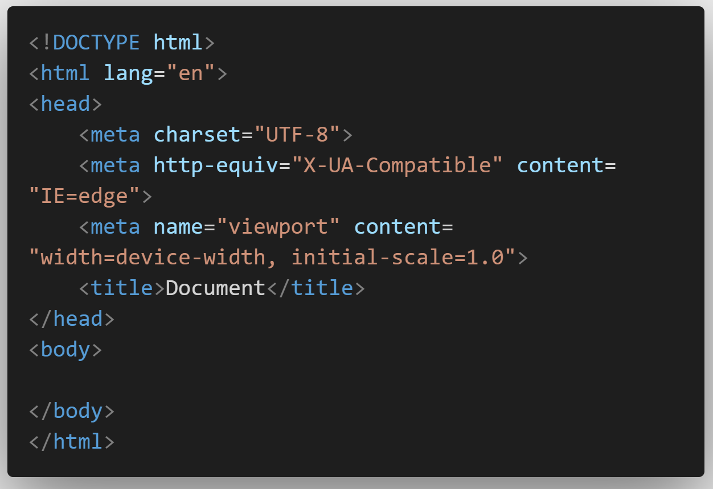

VS Code для вёрстки
Emmet - мощный инструмент для ускорения процесса вёрстки веб-страниц. Он предоставляет удобные сокращения и команды, которые позволяют создавать базовую структуру кода в считанные секунды. Просто используя комбинацию символов "!" и нажатие клавиши Tab, вы мгновенно создаете каркас вашего HTML-документа.
Не ограничиваясь лишь созданием основной структуры, Emmet также обеспечивает быстрое и удобное создание вложенных тегов. Это позволяет экономить время и силы разработчика при написании кода, особенно в случаях, когда требуется создание большого количества элементов.
Важным преимуществом Emmet является его богатый набор функций. Он поддерживает различные фишки, такие как генерация текстового содержимого, автоматическое создание списков, генерация атрибутов и многое другое. Эти функции позволяют вам не только ускорить процесс вёрстки, но и делают код более читаемым и поддерживаемым.
Удобство использования Emmet ещё более повышается благодаря встроенной поддержке во многих редакторах кода. Вам не нужно устанавливать дополнительные плагины или расширения - просто начните использовать Emmet, и ваш редактор автоматически распознает его синтаксис.
Таким образом, Emmet не только ускоряет вёрстку, но и облегчает жизнь разработчикам, предоставляя им мощный инструмент для эффективной работы с HTML и CSS
